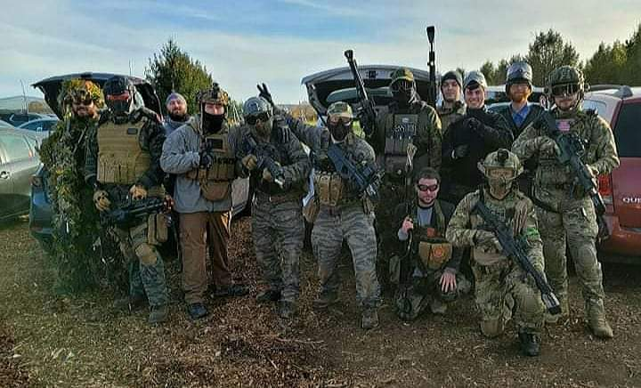
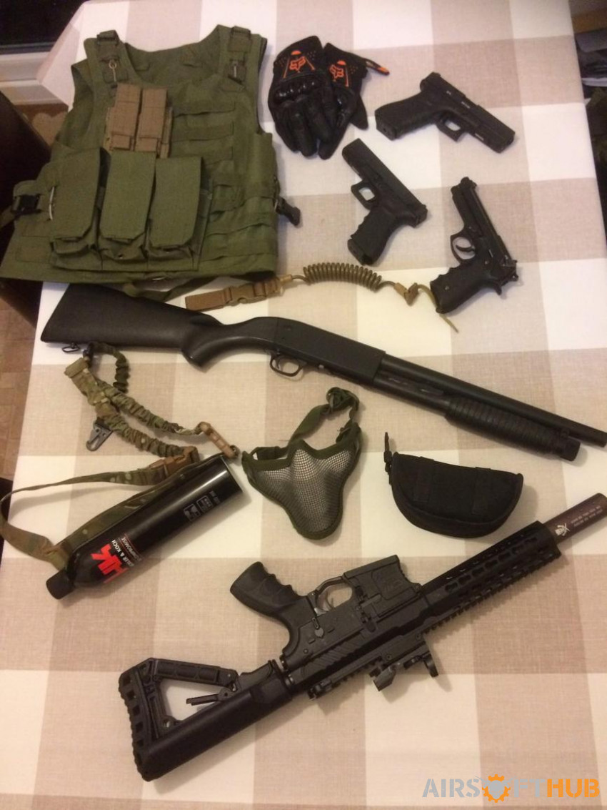
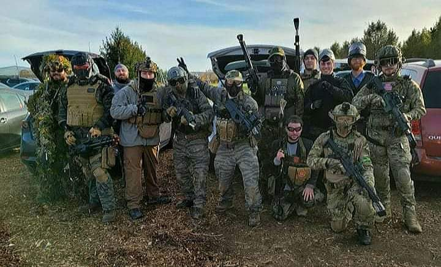
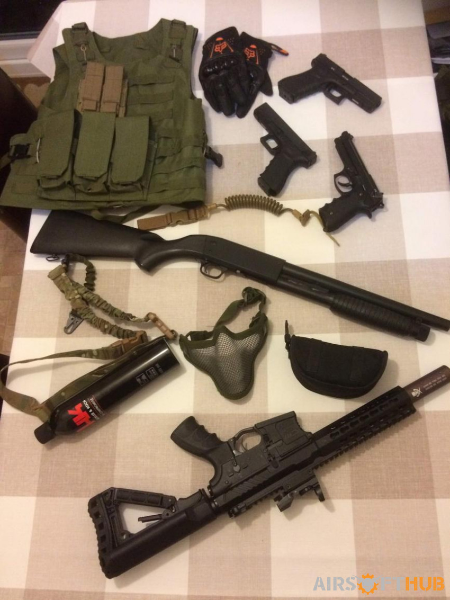
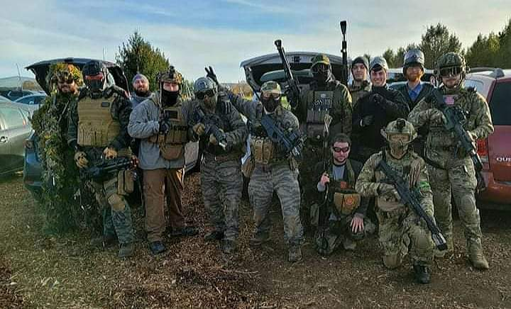
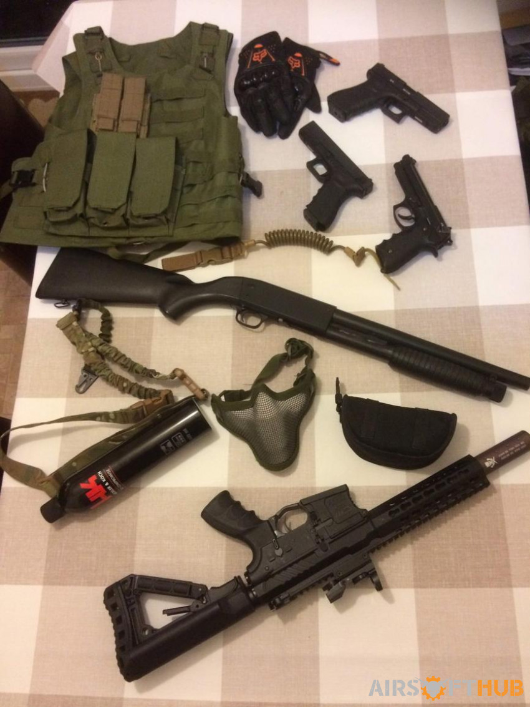
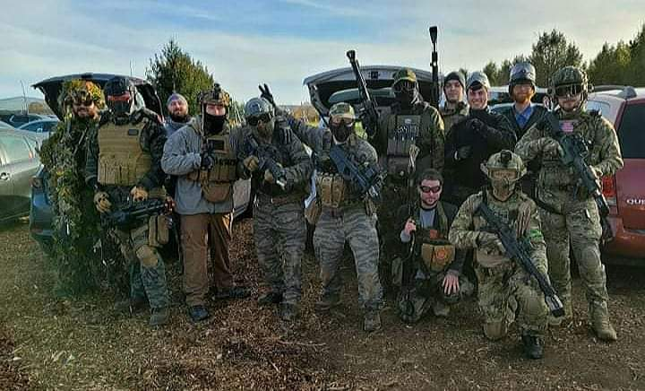
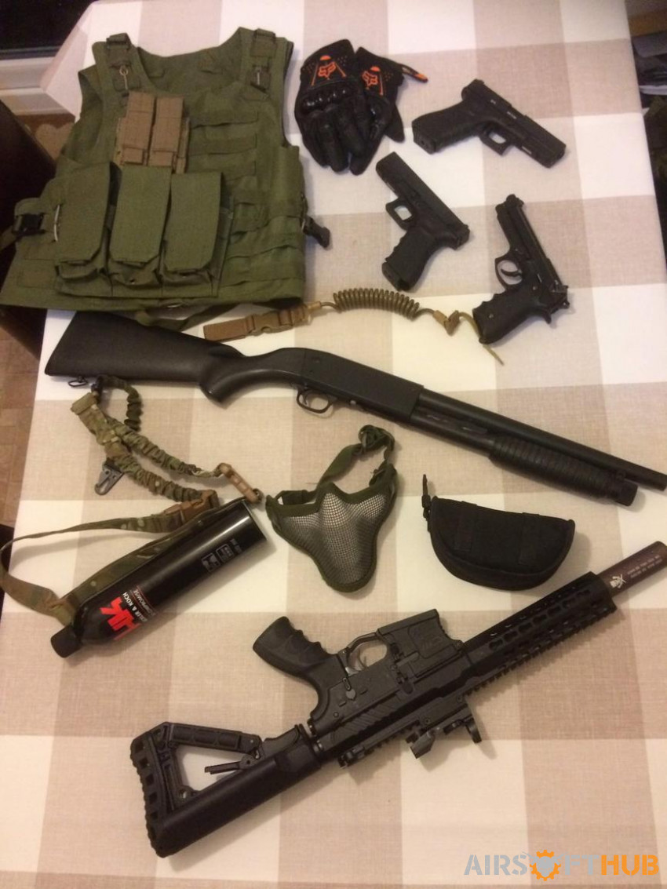

Vincent has many hobbies to choose from that he enjoys. His hobbies include designing artwork, playing video games, leatherworking, smithing, playing airsoft, and he prefers to play sports instead of watching them. The one hobby that he is most interested in furthering is airsoft. His friends have gotten him into it as he considers is a real-world video game. He wants to try and make it into a career and try his hand at running a youtube channel for it. Playing a game of airsoft with people whether it be indoors or out is a great form of exercise and stress relief. Each game can last 30 minutes, and each session can last 5 to 8 hours. Airsoft has events across the United States that hundreds to thousands of players attend. These events could range anywhere from a one-day event to a weeklong putting people in a battlefield where they have to develop a warlike strategy against each other. Even some scenarios will put people in a state of duress because enemies could attack you while you are sleeping or even eating. Some of the events encourage you to role play and perform quests. The roleplay events could be similar to Fallout, western scenarios, and historical battles. From playing any sport there is chance of injuries. The most common are bruises, plastic BBs getting stuck in the skin, and you can have some hearing damage from concussive grenades going off. Vincents advice for getting into airsoft is to just jump in and prepare to get shot. You will get hurt but the main purpose is to have fun.